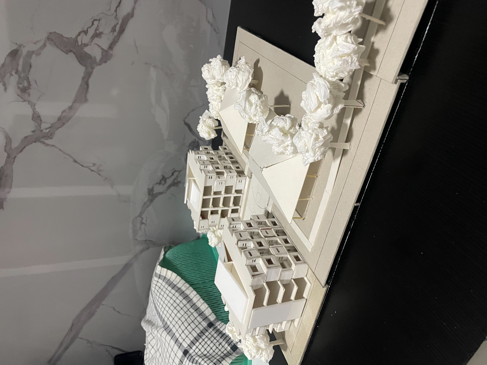
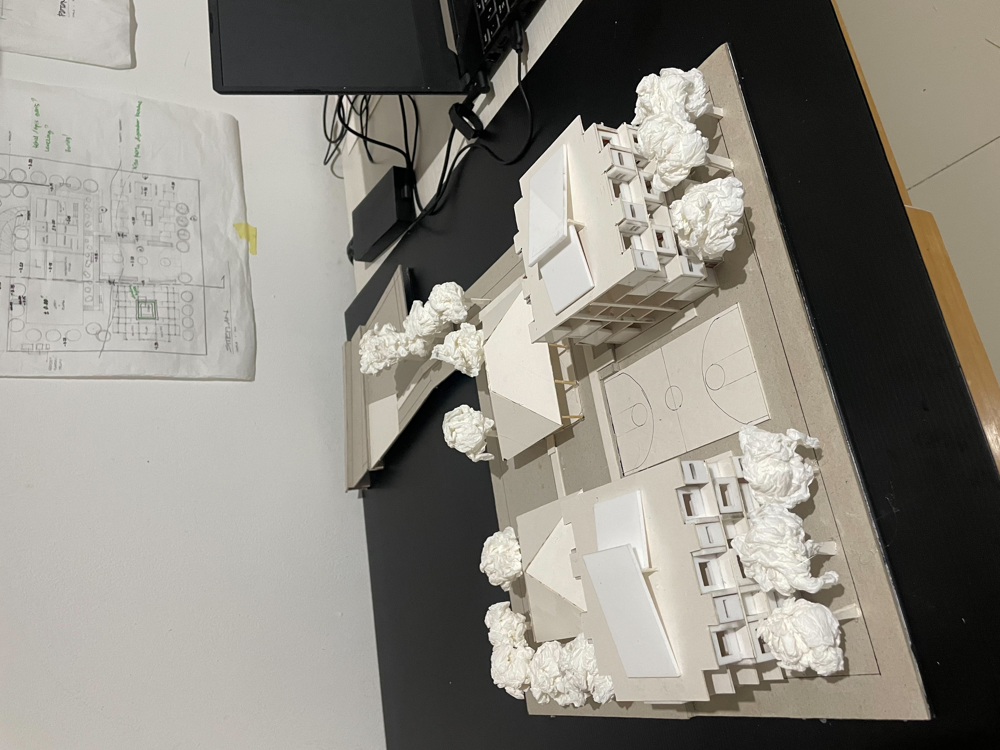
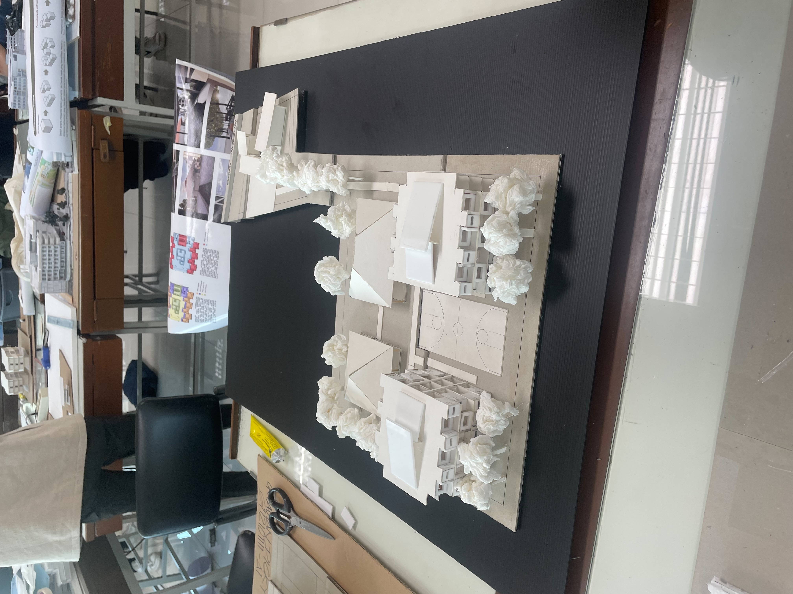
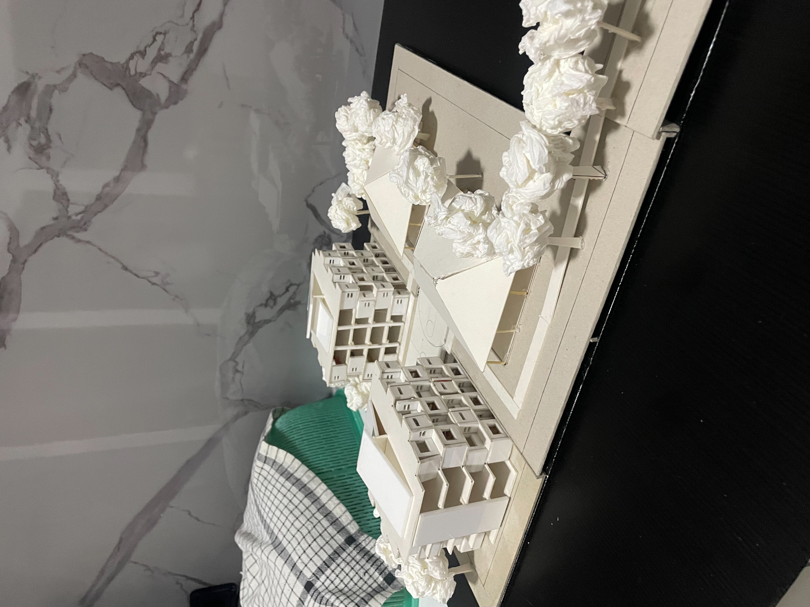
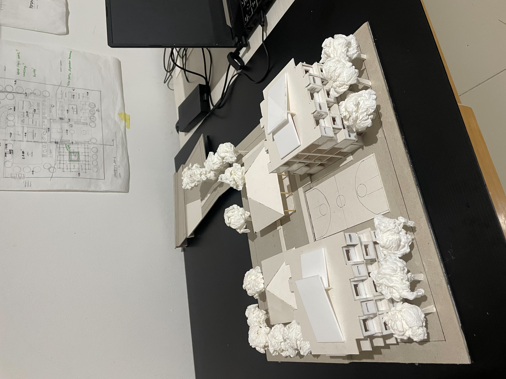
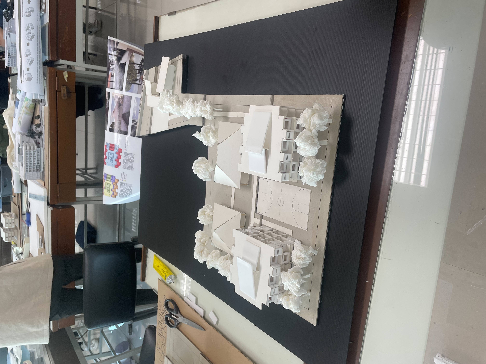

Asrama Mahasiswa Nusantara
Asrama Mahasiswa Nusantara is a special dormitory for students of state universities, ranging from
1st to 4th semester. The project is located in Bandung, Jalan P.H Mustofa, an urban area full of commercial activities around the area.
full of commercial activities around the area. The site itself has a unique shape,
when first visited. This project aims to build a special residence for students
from various regions in the archipelago who are pursuing higher education from semester 1 to 4 at a state university.
The dormitory is designed to provide comfortable residential facilities,
support academic activities, and promote social interaction between students from different cultural and ethnic backgrounds.
cultural and ethnic backgrounds. This design approach came to me when I saw that the area was filled
with commercial activities and busy streets made the site lack a favorable view,
so the focus of the site design is to maximize the view gain for the residents, especially for the dormitory building.


 




